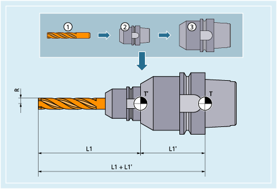
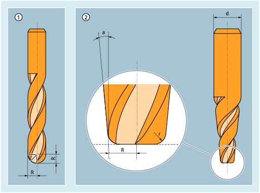
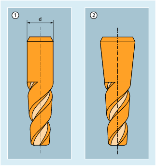

The following tool types are available in the "Milling tools" group:
100 | Milling tool according to CLDATA (Cutter Location Data) |
110 | Ball end mill |
111 | Cylindrical die-sinking milling cutter |
114 | Barrel cutter (barrel shape) |
115 | Drop cutter (drop shape) |
116 | Conical barrel cutter (cone shape) |
120 | End milling cutter without corner rounding |
121 | End mill with corner rounding |
130 | Angle head cutter without corner rounding |
131 | Angle head mill with corner rounding |
140 | Facing tool |
145 | Thread cutter |
150 | Side mill |
151 | Saw |
155 | Bevel cutter without corner rounding |
156 | Bevel cutter with corner rounding |
157 | Tapered die milling tool |
160 | Drill and thread milling cutter |
The following diagrams provide an overview of which milling tool parameters are entered in the compensation memory:
① | Tool |
② | Tool holder |
③ | Tool adapter |
T | Adapter reference point (for inserted tool = tool carrier reference point) |
T' | Tool carrier reference point |
L1 | Geometry - length 1 |
L1' | Adapter dimension - length 1 |
L1 + L1' | Total length L1 |
R | Radius |
Tool parameters | Meaning |
|---|---|
$TC_DP1 | Tool type 1xy |
$TC_DP3 | Geometry - length 1 |
$TC_DP6 | Geometry - radius |
$TC_DP21 | Adapter dimension - length 1 |
| |
T | Tool carrier reference point |
T' | Tool carrier reference point |
L1 | Geometry - length 1 |
R | Tool radius |
L1' | Base dimension - length 1 |
L2' | Base dimension - length 2 |
L3' | Base dimension - length 3 |
Tool parameters | Meaning |
|---|---|
$TC_DP1 | Tool type |
$TC_DP3 | Geometry - length 1 |
$TC_DP6 | Geometry - radius |
$TC_DP21 | Base dimension - length 1 |
$TC_DP22 | Base dimension - length 2 |
$TC_DP23 | Base dimension - length 3 |
| |
The shape of the tool is defined using the tool parameters 6 to 11. The data is required for the geometry tool radius compensation.
In most cases, only the tool parameter $TC_DP6 (tool radius 1) is used.
For the definition of contour tools with multiple tool cutting edges, the minimum and maximum limit angle can be entered. Both limit angles each relate to the vector of the cutting edge center point to the cutting edge reference point and are counted clockwise.
Tool angle 1 | Minimum limit angle per tool cutting edge |
Tool angle 2 | Maximum limit angle per tool cutting edge |
The tool parameters relevant to the tool description in 3D face milling are dependent on the tool type used. Thus, for example, for a ball end mill, only tool parameter 6, for a bevel cutter with corner rounding additionally tool parameters 7, 9 and 11, are relevant.
① | Ball end mill |
② | Bevel cutter with corner rounding |
R | Tool parameter 6: Tool radius |
r | Tool parameter 7: Corner radius |
d | Tool parameter 9: Upper bevel cutter diameter |
a | Tool parameter 11: Angle between envelope line and tool longitudinal axis |
Specification of tool parameter 9 (upper bevel diameter) is optional. If this tool parameter is not specified, a conical shape stretching along the entire tool length is assumed:
① | With specification of tool parameter 9 |
② | Without specification of tool parameter 9 |
See also:
Overview